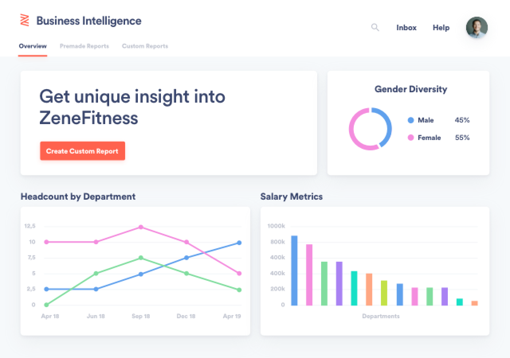

our top pick
Zenefits
Zenefits is the ultimate all-rounder. It combines a ton of HR functionality in one easy-to-use and intuitive solution and is particularly strong in benefits administration and time and attendance management.

Zenefits is the ultimate all-rounder. It combines a ton of HR functionality in one easy-to-use and intuitive solution and is particularly strong in benefits administration and time and attendance management.
Workable
Workable is typical of modern SaaS solutions. You don’t need loads of training, even if you’ve never worked in HR or recruitment before. Its candidate sourcing functionality is excellent, and it also provides solid job ad creation and candidate tracking features.
BambooHR
BambooHR provides a wide variety of core HR functionality, such as workforce management, recruitment, and time-off management, in one easy-to-use package. Its intuitive user interface means you can get up to speed quickly, without any training.
Workday
Workday is a mammoth HR solution that manages to combine an intuitive user interface, with an excellent level of usability, and a wide range of features. It’s an all-around solution that can help improve the way HR professionals manage the workforce.
SentricHR
SentricHR provides a wide variety of features at a reasonable price, with time and absence management, benefits admin, recruitment, document admin, and performance management functionality all included in one solution.
Every business has different needs, but there are some core features that you should look for in any HR software. We’ll explore the characteristics to look out for below.
It’s important to keep on top of who is on vacation, who is at the dentist, who is on jury duty, who is on sick leave, etc., so you can ensure adequate staffing levels. By choosing an HR software with absence management functionality, you can make sure you have adequate cover for planned absences while keeping on top of unplanned absences.
As different companies have different absence guidelines, you are also able to tailor the system to your specific needs. This includes factors such as how much PTO an employee gets, whether you have a work-from-home policy, or if you have a return-to-work process.
HR software systems can also help you keep track of different types of employees, for example, whether they are part-time, contract, or have more PTO due to longer service at the company.
One of the most important factors for US employees when choosing a job is the benefits package. That’s why being able to manage benefits in an efficient and transparent way is so important.
By using HR software, you can create your own benefits package and make sure it takes into account both your business situation and the needs of your employees.
With HR management software, you are able to track the costs of this package, as well as get an overview of which employees are eligible for which benefits. Employees also get full visibility into which benefits they are entitled to, and what the cost of these benefits will be each month.
While you don’t necessarily need a solution that comes with full-blown HR recruitment software functionality, it’s important to be able to post job ads, source candidates, and move these candidates down the pipeline.
This will not only help you to recruit better candidates in a shorter timeframe but also improve the candidate experience. This means that you can attract the best talent to your company, instead of putting them off with a long and over-complicated hiring process.
While it isn’t necessary to choose HR payroll software that lets you manage your finances from within the same solution, you do need to make sure that the solution you choose integrates with your payroll system.
That’s because HR needs to share data, such as salary, hours worked, and overtime with the payroll department to ensure each paycheck is correct.
Instead of seeing HR software as a costly investment, you need to consider the time and efficiency benefits, plus savings in expenditure you’ll make in the long term. Here are the benefits your business will reap from HR software.
Implementing HR software helps you automate manual processes, so you can concentrate on taking care of your workforce and keeping your employees happy.
HR software takes a lot of the effort out of tracking overtime, managing absences, setting and reviewing goals, and sourcing and hiring candidates. Instead of having to manually enter and update data, and track the progress of different processes, you can let your software take care of that for you.
There are some business functions where having accurate data is crucial. HR is one of those business functions. If you don’t have HR software, and instead use spreadsheets or — even worse — pen and paper, making sure you have accurate data is almost impossible.
People email spreadsheets back and forth so you’re never really sure which one has the latest data, and you have no version control to see what changes have been made. Your data is also not protected, and can easily fall into the wrong hands, plus if you’re out of the office, you might not have access to the necessary information.
With HR software, you always have access to the latest data, and you can set permissions so only certain people can access specific information.
Assuming you choose cloud-based, online HR software, anyone can access the data from anywhere in the world through an internet browser.
As an HR professional, you have to keep on top of a lot of different regulations, and non-compliance often equals hefty fines. But, if you have better quality data, see point above, you’re far more likely to be submitting accurate information and within the necessary deadline.
Some of the best HR software options have features that specifically deal with regulations, especially new laws, and provide training to ensure you are completing the necessary steps to stay compliant.
Also, companies such as SentricHR provide tips in their blogs to make you aware of new laws — such as the overtime exemption threshold law change — and help you stay within the rules.
The answer to this is “depends”. There is no one “best” HR software, it all depends on your business needs and specific situation.
If you are a very small business with an inexperienced HR team then you need to look for an intuitive and easy-to-use solution, such as BambooHR. If you have complex HR needs and an experienced team, then Workday might be a better option for you.
You can get free HR software, or you can spend hundreds of dollars a month on an all-singing, all-dancing solution. But you’re looking at this from the wrong angle. You need to work out what you can afford to pay for your HR software and what features you need to run your HR department and then look for a tool that meets these requirements.
It doesn’t have to be. Modern HR software is generally user friendly, easy to use and quick to pick up, even if you don’t have much experience.
Almost all software vendors provide help centers with a ton of articles, videos and tutorials to help you get up to speed and resolve problems yourself. Some software vendors provide in-app tips to explain how to use certain features.